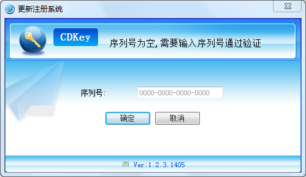
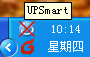
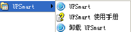

-
安装UPSmart
- 1. 点击安装程序UPSmart_setup.exe，选择安装路径完成安装。
- 2. 注意在Windows XP， NT 4.0/2000及Server下安装，请先使用超级管理员身份登录。
-
启动UPSmart
- 1. 安装完成后，在系统桌面产生应用程序的快捷方式并且在系统开始菜单栏产生登录快捷方式。
- 2. 注意系统在用户登录windows后，可以设置为自动启动该服务程序。
- 3. 软件启动后，在系统图标栏内可以看到程序图标，程序主界面如下图，并且首次启动需要输入软件序列号，如果未输入序列号，软件会定时提示输入序列号。
- 
- 4. 输入正确序列号后，会显示出软件的主界面，并且在任务栏中会出现如下界面：
-
 | UPSmart与UPS连接正常 |
|  | UPSmart与UPS通信异常 |
-
卸载UPSmart
- 若要卸载UPSmart，则在UPSmart程序组里选择"卸载UPSmart"并确认即可完成删除。
-
- 
- UPSmart:点击后，进入主程序。
- 卸载UPSmart:点击后，进入卸载程序。